Desert resort city within the Coachella Valley, the city is noted for its mid-century modern architecture, design elements, arts and cultural scene, and recreational activities
How to Get There
From Los Angeles (107 mi): Get on US-101 S. Follow I-10 E to CA-111 in Whitewater. Take exit 111 from I-10 E. Continue on CA-111. Drive to E Alejo Rd in Palm Springs.
Overview
Palm Springs is a stylish desert resort city of about 45,000 residents in the Coachella Valley, about 100 miles east of Los Angeles, at the foot of Mount San Jacinto. It is famous for its mid-century modern architecture, its sunny winters, hot springs, golf courses, spas and its retro-chic atmosphere.
Visitors come to Palm Springs to relax by the pool, to ride the Aerial Tramway up Mount San Jacinto, to hike in Indian Canyons and to see the city's modern architecture. It is also a gateway to Joshua Tree National Park and the Coachella Valley Music and Arts Festival in nearby Indio, and a major destination for the LGBTQ community.
History
The Agua Caliente Band of Cahuilla Indians has lived at the hot springs for centuries, and the town was named Palm Springs after the desert palms. Wealthy visitors came for the dry air in the early 1900s, and Hollywood stars flocked here in the 1930s to 1960s, as the town became a resort. Architects such as Richard Neutra, Albert Frey and E. Stewart Williams designed modern homes and hotels that now define the city's look.
San Jacinto Mountains and San Jacinto Peak
Rising directly behind the city, the San Jacinto Mountains shape Palm Springs' climate and its skyline. San Jacinto Peak, at 10,834 feet, is the second highest peak in Southern California, and its steep north face climbs nearly 10,000 feet above the desert floor in only a few miles, one of the largest abrupt rises in North America. The mountains shield the city from coastal storms and winter winds, which helps explain its dry, sunny weather, and their snow-fed canyons are the source of the springs and palm oases that supported the Cahuilla. Much of the range is protected as Mount San Jacinto State Park and the surrounding wilderness, which can be reached on the Aerial Tramway or by long trails, and from the Mountain Station hikers can reach the summit on a strenuous round trip of about 11 miles.
Windmills of Palm Springs
At the north end of the city, the Windmills of Palm Springs have become one of its best-known landmarks. The San Gorgonio Pass, between the San Jacinto and San Bernardino Mountains, funnels strong winds from the coast into the desert, and wind energy development here began in the early 1980s. Today the pass holds thousands of turbines, among the largest wind farms in the United States, and the rows of white towers against the mountains are visible along Interstate 10 and Highway 111 as travelers arrive. Guided tours take visitors among the turbines to see how they work, and the wind farm supplies clean electricity to the region.
Sightseeing and Popular Landmarks
The Aerial Tramway, built in 1963, carries riders in about ten minutes from the desert floor to a mountain station at 8,516 feet, and Palm Canyon in the Indian Canyons has fan palm oases. The Windmills of Palm Springs, the Forever Marilyn statue and the Palm Springs Walk of Stars are well-known sights.
Culture and Museums
The Palm Springs Art Museum shows modern and contemporary art, with a separate Architecture and Design Center, and the Agua Caliente Cultural Museum tells the story of the Cahuilla people. The Palm Springs Air Museum displays World War II aircraft, and Modernism Week each February and the Palm Springs International Film Festival each January draw crowds.
Parks
Mount San Jacinto State Park offers high-country hiking above the tram, and the Indian Canyons, owned by the Agua Caliente, have trails through palm oases. Tahquitz Canyon, the Coachella Valley Preserve and Joshua Tree National Park are nearby, and the city's golf courses and resort pools are popular in winter.
Seasons and Weather
Palm Springs has a hot desert climate, with summer highs often above 105°F and winters that are warm and sunny, with highs in the 70s. The city gets only about 5 inches of rain a year and about 350 sunny days, and the best months for visiting are November through April. Summer thunderstorms and windstorms occasionally affect the area.
This article uses material from Wikipedia as well as information from official tourism and institutional sources. Key references include Visit Palm Springs, City of Palm Springs, Palm Springs Aerial Tramway, Agua Caliente Cultural Museum, and National Weather Service San Diego. Wikipedia material is from the article "Palm Springs, California", released under the Creative Commons Attribution-Share-Alike License 3.0.
Featured Locations and Trails
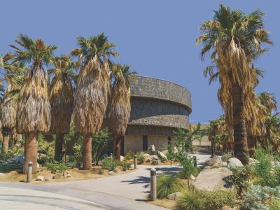
Bureau of Land Management, Public domain, via Wikimedia Commons; Image Size Adjusted
.jpg){kind=link}
Agua Caliente Cultural Museum
Interactive exhibits and immersive storytelling explore the heritage, traditions, and contemporary life of a Native American tribe through art, artifacts, and multimedia.
Stan Shebs, CC BY-SA 3.0, via Wikimedia Commons; Image Size Adjusted

Forever Marilyn
Large-scale outdoor sculpture depicting a Marilyn Monroe pose from a classic film, displayed prominently in a public plaza setting.
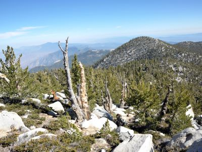
Bureau of Land Management, Public domain, via Wikimedia Commons; Image Size Adjusted
Mount San Jacinto
10,834 ft peak lying within Mount San Jacinto State Park and towers over the city of Palm Springs
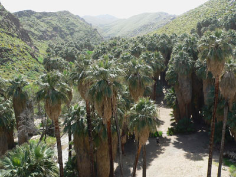
Stan Shebs, CC BY-SA 3.0, via Wikimedia Commons; Image Size Adjusted
Palm Canyon
Shaded canyon corridor lined with native fan palms, seasonal streams, and desert wildlife, offering scenic trails through a unique desert oasis ecosystem.
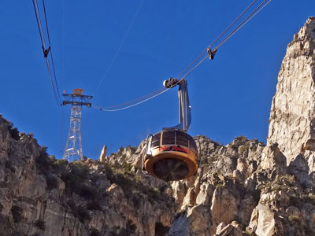
Don Graham from Redlands, CA, USA - God bless it!, CC BY-SA 2.0, via Wikimedia Commons; Image Size Adjusted
.jpg){kind=link}
Palm Springs Aerial Tramway
Largest rotating aerial tramway in the world built as a way of getting from the floor of the Coachella Valley to near the top of San Jacinto Peak

Bureau of Land Management, Public domain, via Wikimedia Commons; Image Size Adjusted
Palm Springs Air Museum
Expansive hangars filled with flyable vintage aircraft, immersive exhibits, and interactive experiences that chronicle the evolution of American air power across major conflicts.
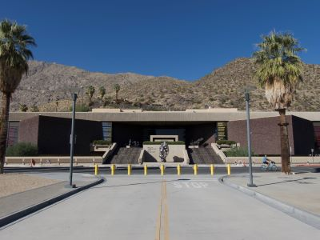
Bureau of Land Management, Public domain, via Wikimedia Commons; Image Size Adjusted
Palm Springs Art Museum
Multilevel galleries and performance spaces feature modern and contemporary art, Native American works, and rotating exhibitions that reflect the cultural richness of the desert region.
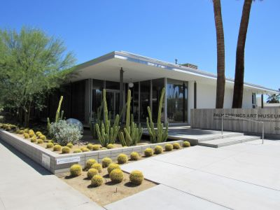
Bureau of Land Management, Public domain, via Wikimedia Commons; Image Size Adjusted
Palm Springs Art Museum Architecture and Design Center
Midcentury modern structure houses rotating exhibitions, archives, and educational programs that explore the intersection of architecture, design, and desert culture.
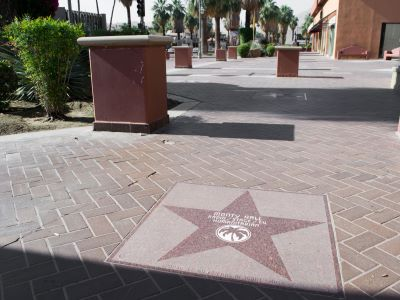
Bureau of Land Management, Public domain, via Wikimedia Commons; Image Size Adjusted
Walk of the Stars
Sidewalk tribute featuring over 460 embedded granite stars honoring celebrities, civic leaders, and cultural icons who have contributed to the legacy of Palm Springs.
Stan Shebs, CC BY-SA 3.0, via Wikimedia Commons; Image Size Adjusted
Windmills of Palm Springs
A sprawling landscape of towering wind turbines stretching across desert foothills, harnessing powerful mountain winds while creating a striking and iconic visual along the highway.
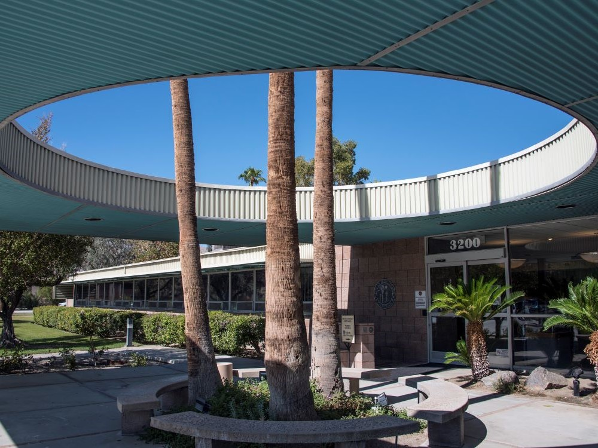
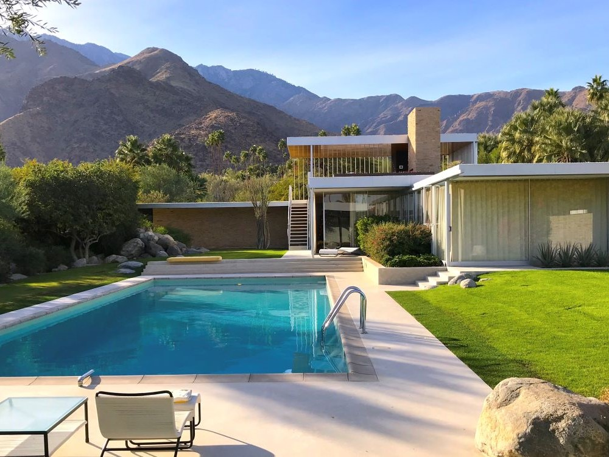

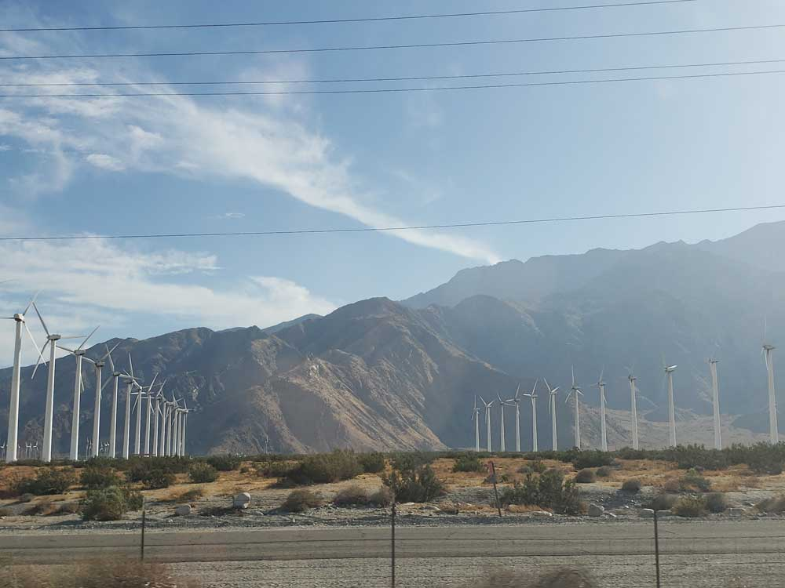

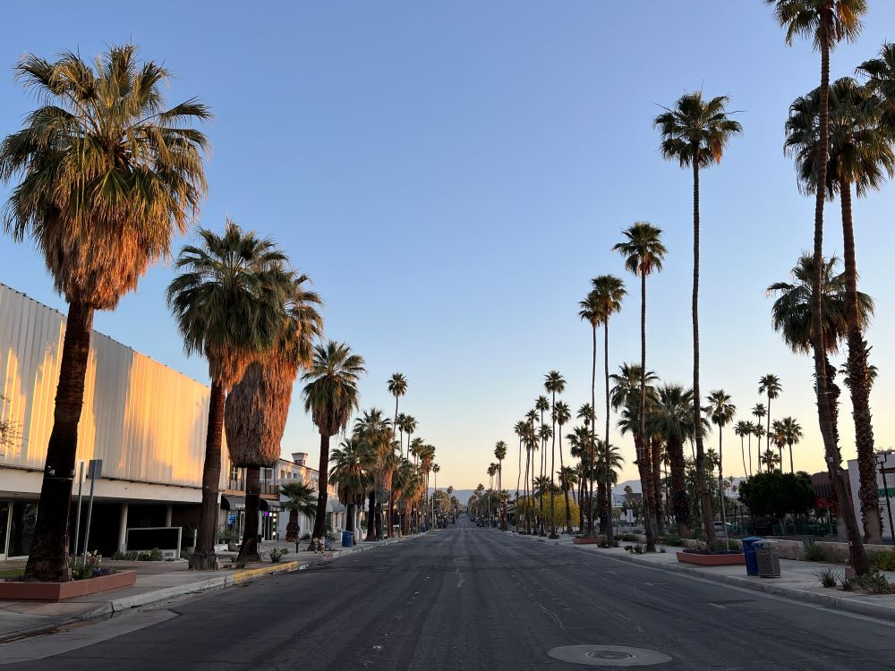

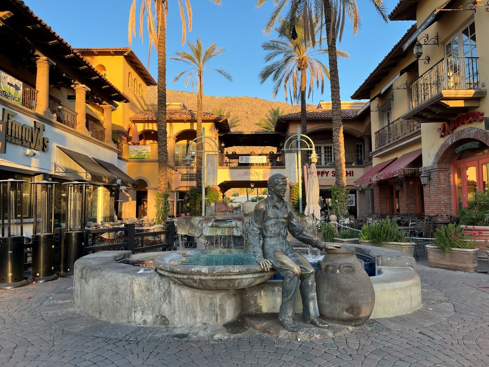
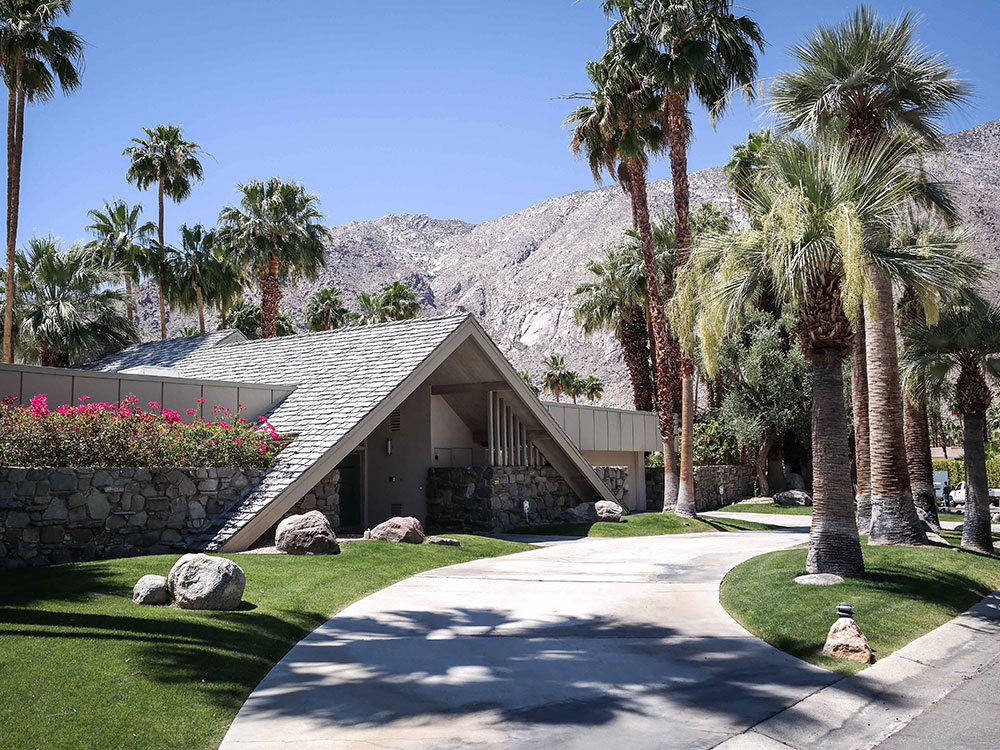
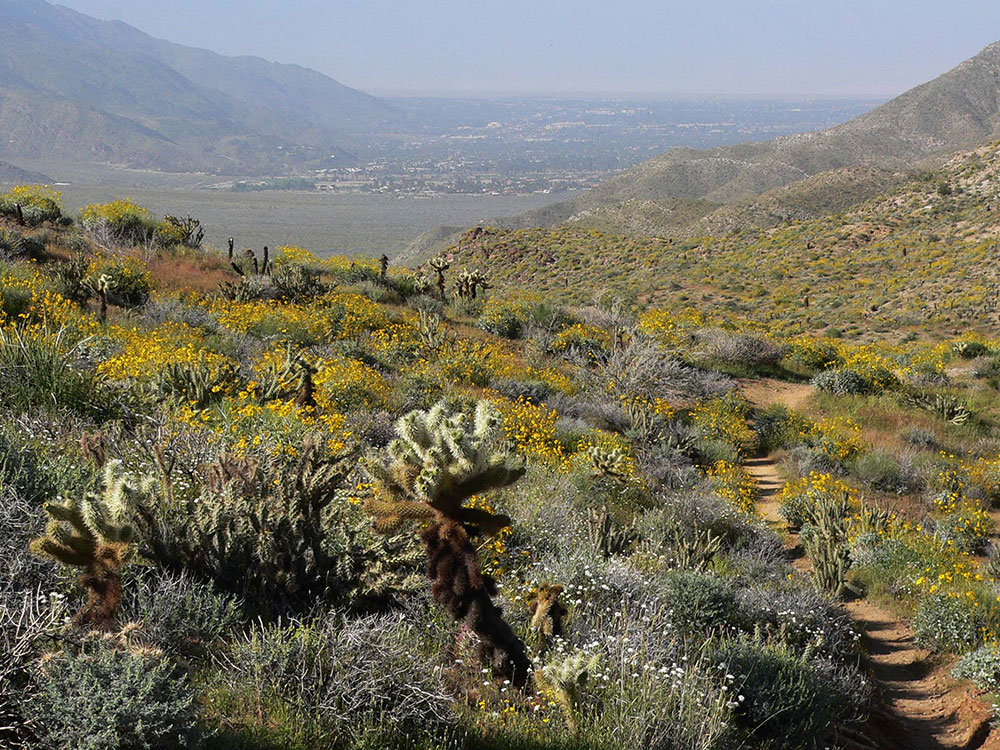
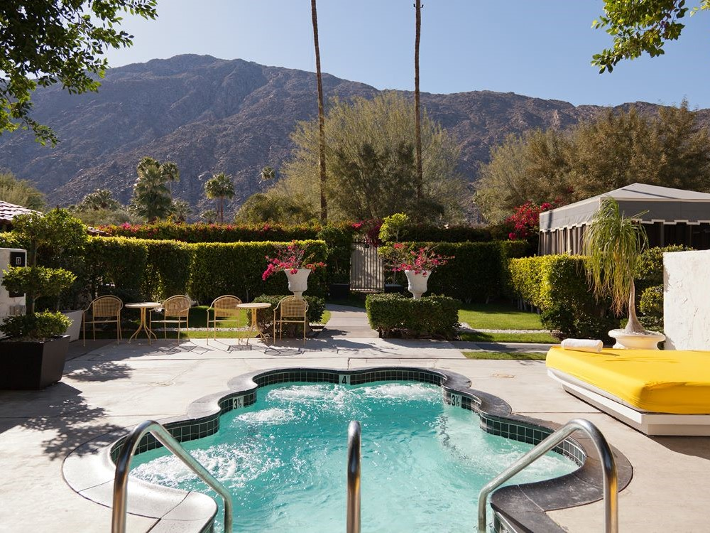
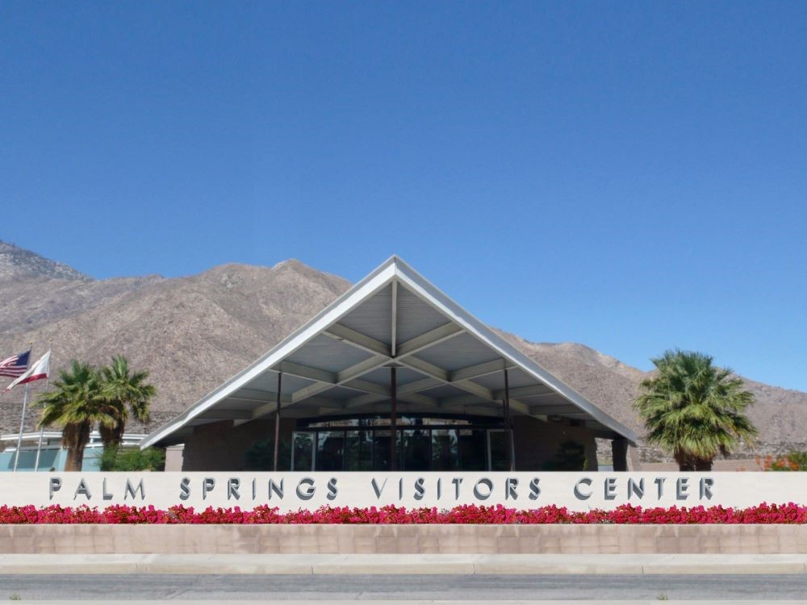
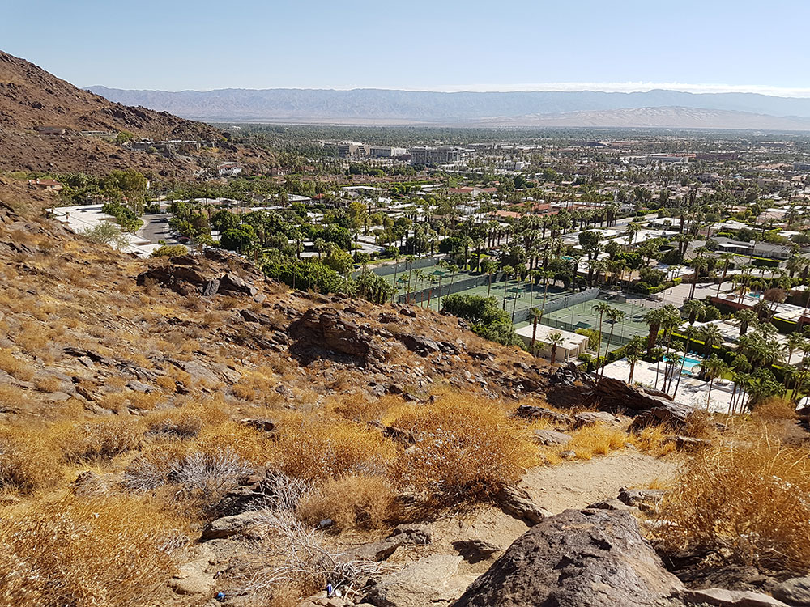
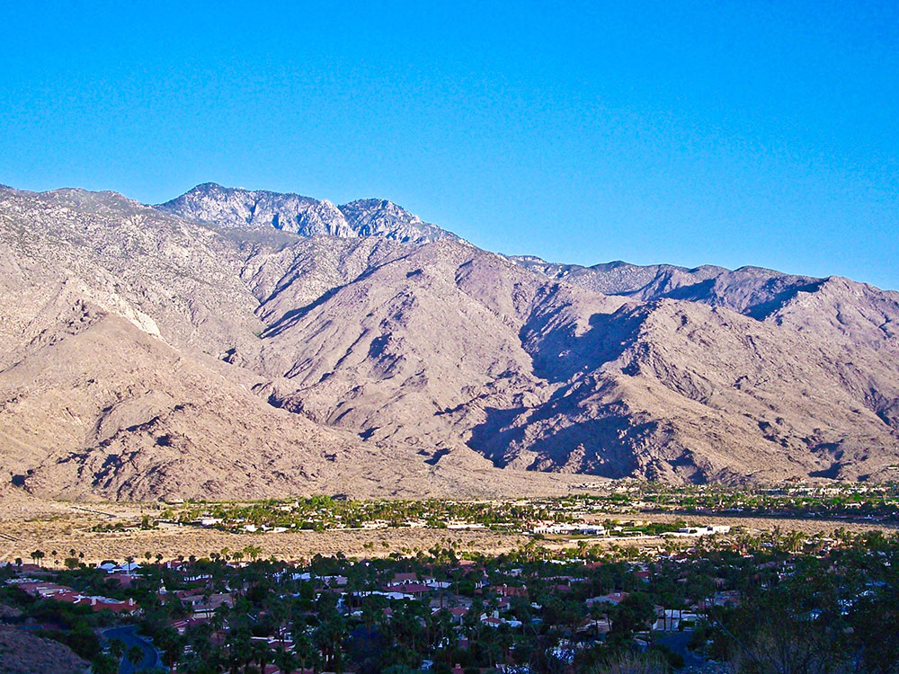
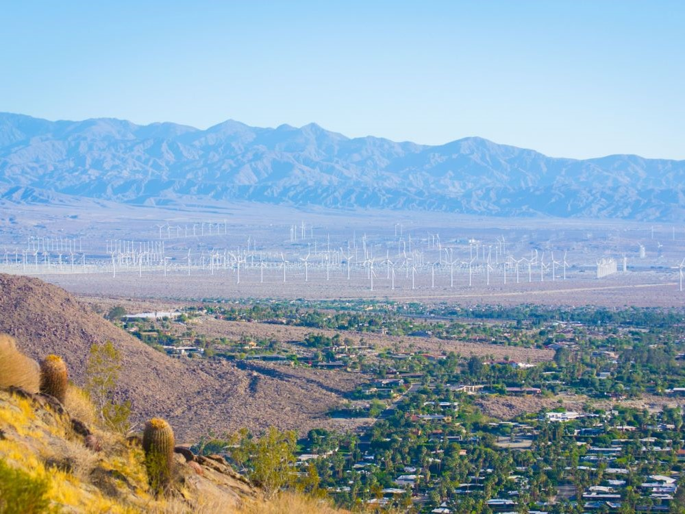
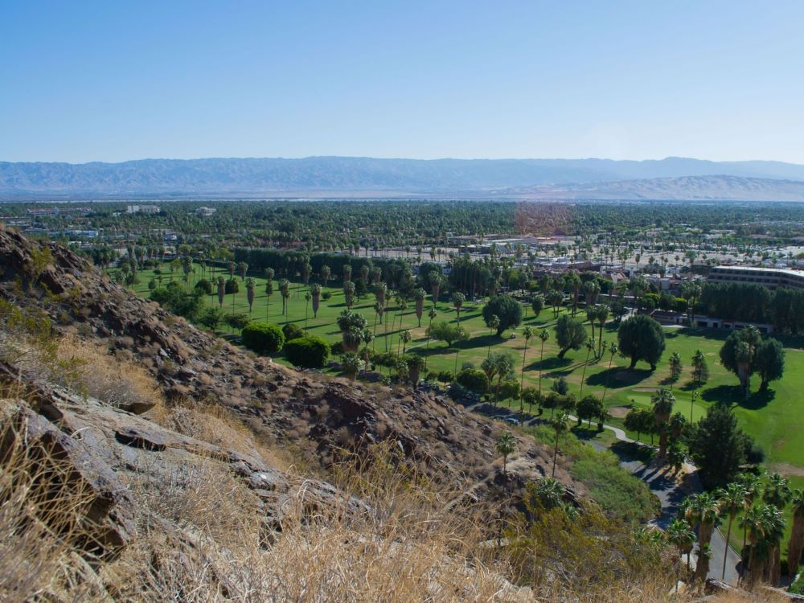